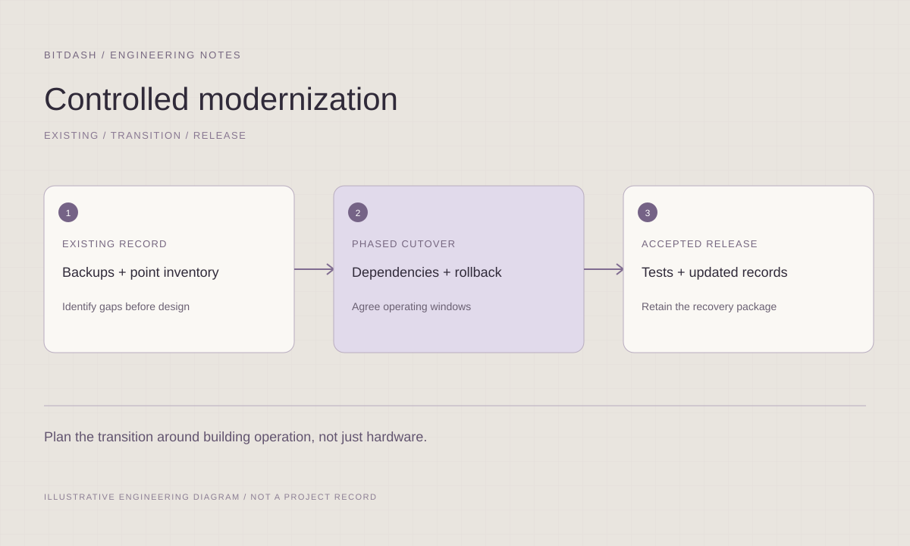

Existing-system assessment
Review the available inventory, versions, backups, interfaces and documentation to establish a usable starting point.
 S O L U T I O N SLet’s talk ↗
S O L U T I O N SLet’s talk ↗Assess the existing system and coordinate a practical path to improvement.
Discuss your project ↗
Review the available inventory, versions, backups, interfaces and documentation to establish a usable starting point.
Map points, alarms, histories, schedules and graphics into the proposed target structure and identify dependencies.
Coordinate release groups, cutover windows, rollback requirements and post-change review with your project team.
A practical transition plan with documented dependencies and verification steps.
View supported platforms ↗Inventory the available controllers, supervisors, points, software versions, integrations, and documentation to establish the current state.
Identify dependencies, compatibility questions, licensing needs, and responsibilities before a proposed version or system change.
Map legacy points, alarms, trends, schedules, and graphics to the intended target structure and document the information to retain.
Plan release groups, cutover windows, verification steps, and rollback requirements with the owner and on-site implementation team.
Improve naming consistency, equipment organization, alarm structure, historical data requirements, and the maintainability of project documents.
Support agreed validation, trend observation, issue closure, backup updates, and operator guidance after a coordinated release.
Assess candidate transitions across TREND, Alerton, Honeywell, and Niagara environments. Map retained functionality, graphics, points, and acceptance checks before agreeing a migration path.
A successful transition starts with understanding what the current system does and what must be retained. We help define a staged engineering path, with compatibility checks and verification built into the plan.

Identify undocumented functions, critical integrations and operating constraints. Separate confirmed information from assumptions that require vendor or field verification.
Document retained functions, replacement scope, naming standards and historical-data needs. Confirm compatibility and licensing before treating a migration path as available.
Agree the acceptance checks for each release group. Coordinate backups, local support and the conditions for rollback, then review operation and open items after the change.
System inventory, versions, backups, and current documentation
Target outcomes, constraints, and acceptable service windows
Vendor compatibility information and approved change responsibilities
File formats, review rounds and final acceptance responsibilities are defined with your team at the start.
Coordinate the transition ↗Review station structure, supported version paths, drivers, modules, and JACE / Supervisor dependencies before a proposed change.
Final scope follows the installed version, licensing and approved access.Inventory retained functions, map dependencies and define a phased cutover with acceptance and rollback conditions. Separate JACE/field control from Supervisor aggregation; record station, driver and license dependencies.
Move one AHU supervision package while preserving agreed schedules, alarms and operator access; verify before the next phase. Alarm destinations, history collection and agreed backup responsibilities.
Illustrative application: A multi-AHU station with a shared Supervisor overview: Phased supervisory cutover. Compatibility and recoverability must be confirmed before an outage is scheduled.
Read the engineering guide ↗Browse AHU, VAV, plant and metering review points ↗
Illustrative record · Compatibility and recoverability must be confirmed before an outage is scheduled.
| Function | Retain or replace | Verification | Rollback trigger |
|---|---|---|---|
| AHU schedule | Retain approved behavior | Confirm next transition | Required function unavailable |
Confirm the installed inventory, versions, backups, engineering tools and retained functions. Review compatibility and interface dependencies before agreeing how the target system will be introduced.
Group work into releases with named owners, access windows, backups, rollback conditions and acceptance checks. Verify each phase and update the current records before moving to the next.